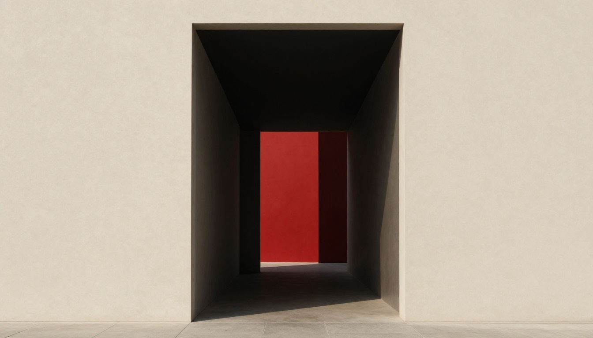

Asya Eğitim · Creative Direction
“Eğitim, hak edilen bir geçiştir — kapı değil, eşik.” Marka, öğrenciyi kapıdan geçiren seçkin rehber olarak durur: sakin, iddialı, törensiz.
Eskiz: “A” iki söve + bir lintelden kurulu bir portaldır; eşiği zinober bir bar işaretler.
Tam kilitlenme: portal-A + iki satır kelime-mark (ASYA Fraunces bold / EĞİTİM Inter tracking). Mimari çerçeve olarak kalır; marka deneyimi öğrenci içeriğiyle kurulur.
Fraunces (display serif, latin-ext — ğ tam destek) + Inter (metin/gövde). Ölçek oranı 1.333.
Desen örneği: eşik konturları — asla harita, asla rota-ok.

Üretilmiş imge (Pollinations, 1/3 bütçe): eşik mimarisi — avlu, geçit, gün ışığı. Yüz önden değil; belgesel sakinlik. Zinober yalnızca varış noktasında.
Kireç-sıva greni + letterpress baskı; kapakta portal gofre.